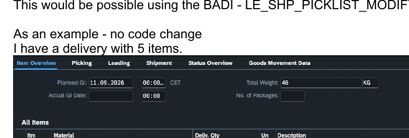
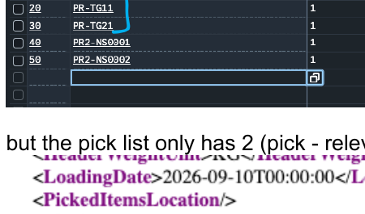
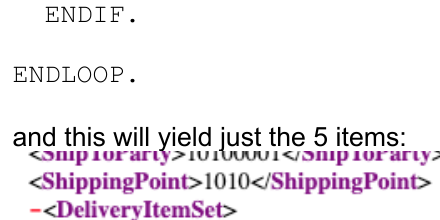
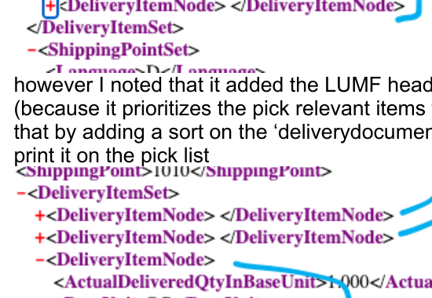

Add non-pick-relevant items to the Pick List
Use the delivery pick-list BAdI to enrich the form data with delivery items that are normally omitted because they are not relevant for picking. This guide shows the safe pattern: preserve the standard pick-relevant items, append only missing delivery items, then optionally restore delivery-item order.
What problem does this solve?
The standard picking list is designed around items that need to be picked. In scenarios such as kits, structured products, packaging-related items, or other delivery structures, you may still want non-pick-relevant items to appear on the printed form for operational clarity.
LE_SHP_PICKLIST_MODIFY_ITEMS as the BAdI for modifying standard and custom fields in a delivery picking list. The corresponding interface is IF_LE_SHP_PICKLST_MODIFY_ITEMS.1. Understand the baseline
In the source example, the outbound delivery contains five items, while the standard pick-list output contains only two pick-relevant items. That difference is the starting point for the enhancement.


PRINT_DELIVERY_ITEMS_IN
The source notes that this table contains the picking-relevant items already selected for the standard pick-list output.
ALL_DELIVERY_ITEMS_IN
This table provides the broader set of delivery items and can be used to identify items that are missing from the standard print list.
2. Preserve standard items, then append only missing items
The key rule from the source material is to copy the standard picking-relevant items first. After that, compare all delivery items with the existing print list and append only items that are not already present.
Copy the standard pick-list items first
This preserves the output that SAP already determined as pick relevant.
Loop over all delivery items
Use the broader delivery-item input table as the candidate list.
Check whether each item is already present
Compare by delivery document and delivery document item to avoid duplicating the standard entries.
Append only missing items
Map the source structure into the pick-list item structure and add the missing entry to the output table.
" Step 1: mandatory - keep the standard picking-relevant items
MOVE-CORRESPONDING print_delivery_items_in
TO print_delivery_items_out.
DATA ls_picklist TYPE shp_fdp_dlv_picking_item.
" Step 2: append only items not already in the standard print list
LOOP AT all_delivery_items_in ASSIGNING FIELD-SYMBOL(<fs_item>).
READ TABLE print_delivery_items_in
WITH KEY deliverydocument = <fs_item>-deliverydocument
deliverydocumentitem = <fs_item>-deliverydocumentitem
TRANSPORTING NO FIELDS.
IF sy-subrc <> 0.
CLEAR ls_picklist.
MOVE-CORRESPONDING <fs_item> TO ls_picklist.
APPEND ls_picklist TO print_delivery_items_out.
ENDIF.
ENDLOOP.
3. Restore delivery-item order when needed
Because the standard pick-relevant items are copied first and the missing items are appended afterwards, the resulting sequence may no longer follow the delivery item numbers. The source example notes this for a higher-level material that appears later than expected.
" Optional: restore natural delivery/item sequence
SORT print_delivery_items_out
BY deliverydocument deliverydocumentitem.
DeliveryDocumentItem, which can be used to order the output consistently with the delivery.Implementation checklist
Confirm the requirement
Decide whether the business wants every delivery item printed, or only a specific subset of non-pick-relevant items.
Implement the BAdI
Use the custom logic implementation for LE_SHP_PICKLIST_MODIFY_ITEMS and retain the mandatory standard item copy.
Prevent duplicates
Use document and item keys to test whether an item is already part of PRINT_DELIVERY_ITEMS_IN.
Test form output
Re-create the picking-list output and validate item count, sequence, descriptions, quantities, and any parent/child structure relevant to the scenario.
SAP Help references
These links provide the official SAP context for the BAdI, the picking-list output, and supported output extensibility.
LE_SHP_PICKLIST_MODIFY_ITEMS and interface IF_LE_SHP_PICKLST_MODIFY_ITEMS for modifying standard and custom fields in a delivery picking list.FDP_V2_PICKING_LIST and the Print Delivery Pick List data source.